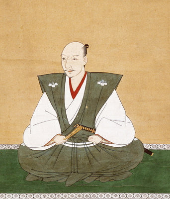
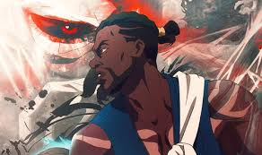
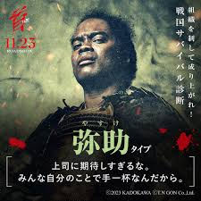

<!DOCTYPE html>
<html lang="ja"></html>

<link rel="stylesheet" href="style.css">

  <head>
    <meta charset="UTF-8">
    <title>サイト名 - アフィリエイト紹介サイト</title>
    <style>
      body { margin: 0; font-family: sans-serif; display: flex; flex-direction: column; }
      header, footer { background: #333; color: #fff; padding: 1em; text-align: center; }
      .container { display: flex; flex: 1; }
      aside { width: 200px; background: #f4f4f4; padding: 1em; }
      main { flex: 1; padding: 1em; }
      .product { margin-bottom: 2em; }
      .product img { max-width: 100%; height: auto; }
      a { color: inherit; text-decoration: none; }
    </style>
  </head>
  <body>
  
    <header>
      <h1><a href="index.html">簡潔な紹介サイト</a></h1>
    </header>

    <div class="container">
      <aside id="sidebar"></aside>
  
      <main>
  
        <script>
          fetch('sidebar.html')
            .then(response => response.text())
            .then(data => {
              document.getElementById('sidebar').innerHTML = data;
            });
        </script>
  
  
      <main>
      
  <h1>伝説の黒人侍！！弥助！！！</h1>

        <div class="anime-item">
          
          <h2 class="anime-title">弥助伝説とは？</h2>
          <p>日本の武士の地位にまで上り詰めた黒人奴隷弥助は、おとぎ話ではありません。
            この誉高い英雄と勇気の物語は世界歴史の年代記に残っている現実の物語です。
            この物語は世界各地の世代にも永遠に語られます.</p>
        </div>

        <div class="anime-item">
          
          <h2 class="anime-title">織田信長の家臣だった！！</h2>
          <p>弥助は日本人の文化と言語に精通していました。信長はアフリカ人の黒い肌に魅せられ弥助を取り込みました。
            武士の象徴である日本刀を与えられ、弥助が日本人以外の血統を持つ最初の侍になったそうです。
            誉高いですね。
          </p>
        </div>

        <div class="anime-item">
            
            <h2 class="anime-title">黒人としての弥助</h2>
            <p>弥助はその、当時の日本人にととっては異様なルックスが注目され好奇の目で見られていました。
                その中で彼は織田信長の家臣として武士の世界に溶け込んで行きました。
                当時の異国の方が日本でどう受け入れられたかを知る上で非常に注目すべき点です。
            </p>
          </div>

          <div class="anime-item">
            
            <h2 class="anime-title">弥助の最期</h2>
            <p>弥助の生涯の最期については諸説あります。
                一般的には信長の死後、秀吉の時代に死去したと語られているようですが、具体的にははっきりとした情報はありませんでした。
            </p>
          </div>


          <div class="anime-item">
            
            <h2 class="anime-title">ゲームでの弥助！！</h2>
            <p>アサクリや弥助シミュレーターをはじめゲームでも人気を博しています。
                ゲーム内では新幹線や銃火器が登場しますので、この時代に新幹線などが存在したのも史実になっていくのは恐ろしいです。
            </p>
          
        </div>

        <div class="anime-item">
            
            <h2 class="anime-title">伝説の黒人侍！！弥助！待望の映画化！！</h2>
            <p>なんと！東映による映画化が決定したようです！！ 南アフリカと共同製作！！
                昨今ではゲームに登場していた弥助ですがついに映画になりました。
                どんな映画になるか楽しみですね。
                このニュースを見たときはついにか！と思いました。
                皆さん！映画館で弥助の伝説を目撃しましょう！！！！
            </p>
          
        </div>

        
      </main>
    </div>
  
    <footer>
      &copy; 2025 サイト名 All Rights Reserved.
    </footer>
    <script>
      fetch('sidebar.html')
        .then(res => res.text())
        .then(html => {
          document.getElementById('sidebar').innerHTML = html;
        });
    </script>
  </body>
  </html>